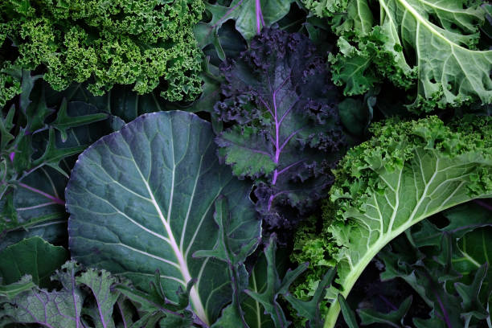

EL REINO VEGETAL
El reino plantae es el reino de la naturaleza, donde se clasifican los organismos conocidos como plantas, estás forman un grupo muy extenso y diverso de organismos, los cuales están caracterizados por dos aspectos importantes, están formados por células vegetales y pueden realizar fotosíntesis, a este reino pertenecen todas las plantas, los musgos, las coníferas, los helechos y las plantas con flor que juntan una diversidad de especies. Las plantas son capaces de realizar fotosíntesis que es el mecanismo por el cual obtienen sus alimentos a partir de la energía contenida por los rayos del sol y el agua que absorben con sus raíces, las plantas mediante este proceso se encargan de producir la mayor parte de oxígeno que los animales terrestres necesitamos para vivir, también proporcionan alimento a animales que se alimentan de ellas y eso las ubica en la base de la cadena alimenticia, gracias a las plantas los animales carnívoros herbívoros y omnívoros obtienen sus alimentos diariamente. Características de este reino plantae, son organismos eucariotas, lo que significa que están formadas por células nucleadas que tienen compartimientos internos delimitadas por membranas, además son pluricelulares, es decir, están formadas células que se organizan para formar tejidos y órganos, con funciones especiales, todas las células vegetales están rodeadas por una pared celular. El reino se divide en tres grandes grupos plantas vasculares con semillas y no vasculares sin semillas, se encuentran las briófitos, se tratan de tres linajes de organismos, no presentan tejidos vasculares, no poseen conductos internos bien diferenciados por donde circula el agua y los nutrientes desde las raíces hacia las hojas y viceversa, así como nuestras arterias, vasos y capilares ayudan a conducir la sangre por nuestro cuerpo. Plantas vasculares se clasifican en plantas con y sin semillas, la reproducción en este reino puede ser sexual y asexual dependiendo de la especie y de ciertas condiciones ambientales, con relación a su nutrición se consideran fotoautrotofos lo que significa que pueden producir su propio alimento gracias a la luz.

Volver